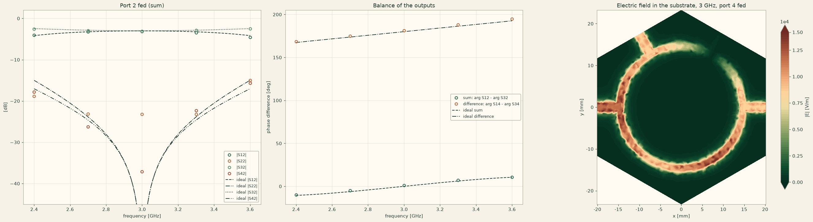
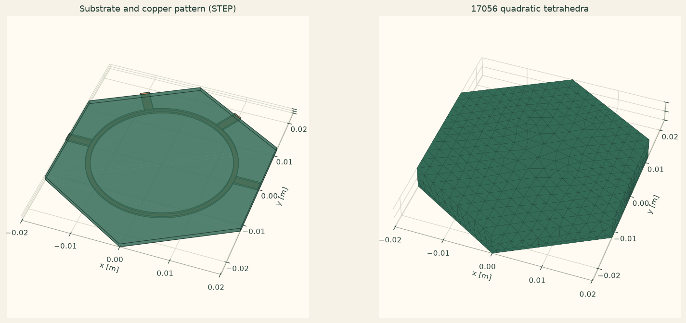

Docs › Examples › Microstrip rat-race coupler
Microwave circuits · 3D
Microstrip rat-race coupler
A microstrip ring one and a half wavelengths around with four ports forms the 180-degree hybrid at 3 GHz: fed at the sum port it splits in phase, fed at the difference port in antiphase.
Run locally with OneSimulation. The example downloads are free. Running them requires an activated runtime. OneSimulation 1.0 · CPython 3.13 on macOS (Apple Silicon), Ubuntu 22.04 (x86-64), and Windows x64. Installation and activation · View pilot plans. Scope of the reference checks.


What it computes
OneSimulation solves the full Maxwell equation on a hexagonal board read from STEP files with second-order Nédélec elements; the copper is a perfect-conductor sheet between two mesh regions, the four feeds end in TEM ports computed from the electrostatic potential of their cross-sections, and a port sweep with one factorization per frequency gives the 4x4 S-matrix in 50 ohm, compared with the transmission-line theory of the ring. The script that builds the STEP files comes with the notebook.
What it checks
At 3 GHz the sum port splits 0.698/0.702 with 1.1 degrees between the outputs and the difference port 0.696/0.698 with -178.6 degrees (ideal 0.707, 0 and 180 degrees); the isolation between sum and difference port is -37.1 dB, and over 2.4-3.6 GHz isolation and split follow the ideal ring within a few dB; reciprocity holds to 1e-13.
Geometry
The notebook starts at the import of the CAD files microstrip_rat_race_coupler.step, microstrip_rat_race_coupler_strips.step, microstrip_rat_race_coupler_substrate.step: STEP (AP242), readable by any CAD program, with the names of the faces that the boundary conditions use. Put them next to the notebook.


The geometry script
The script microstrip_rat_race_coupler_geometry.py builds the geometry with the CAD objects of OneSimulation and writes the files. Change a dimension there, run it, and run the notebook again.
"""Geometry of the OneSimulation example "Microstrip rat-race coupler".
Builds with the CAD objects of OneSimulation a rat-race (hybrid ring) coupler for 3 GHz on a 0.813 mm
substrate of relative permittivity 3.55: a 70.71-ohm ring one and a half guide wavelengths around
(widths and lengths from the Hammerstad-Jensen formulas, mean radius from the circumference) and four
50-ohm feed lines leaving it radially at 0, 60, 120 and 180 degrees. The board is a regular hexagon
whose sides face the feed directions, in a box of air 5 mm high. Three STEP files:
microstrip_rat_race_coupler.step (faces port_1 ... port_4 at 0, 60, 120 and 180 degrees, wall for
the two other sides, ground below, lid above), microstrip_rat_race_coupler_substrate.step and
microstrip_rat_race_coupler_strips.step (a thin layer of air on the substrate in the shape of the
copper: its face on the substrate is the conductor pattern).
"""
import numpy as np
from onesim.cad.d2 import Profile
from onesim.cad.d3 import AnnularCylinder, Box, Prism
from scipy.optimize import brentq
height, permittivity, frequency, lid, feed, layer = (
0.813e-3,
3.55,
3e9,
5e-3,
5e-3,
0.4e-3,
)
eta0, light = 376.730313668, 299792458.0
def microstrip(width):
u = width / height
a = (
1
+ np.log((u**4 + (u / 52) ** 2) / (u**4 + 0.432)) / 49
+ np.log(1 + (u / 18.1) ** 3) / 18.7
)
b = 0.564 * ((permittivity - 0.9) / (permittivity + 3)) ** 0.053
effective = (permittivity + 1) / 2 + (permittivity - 1) / 2 * (1 + 10 / u) ** (
-a * b
)
f = 6 + (2 * np.pi - 6) * np.exp(-((30.666 / u) ** 0.7528))
return (
eta0 / (2 * np.pi) * np.log(f / u + np.sqrt(1 + 4 / u**2)) / np.sqrt(effective),
effective,
)
ring_width = brentq(
lambda w: microstrip(w)[0] - 50 * np.sqrt(2), 0.05 * height, 20 * height
)
feed_width = brentq(lambda w: microstrip(w)[0] - 50.0, 0.05 * height, 20 * height)
radius = 1.5 * light / frequency / np.sqrt(microstrip(ring_width)[1]) / (2 * np.pi)
apothem = radius + ring_width / 2 + feed
corner = apothem / np.cos(np.pi / 6)
outline = Profile.polygon(
[
(
corner * np.cos(np.radians(30 + 60 * k)),
corner * np.sin(np.radians(30 + 60 * k)),
)
for k in range(6)
],
names=["port_2", "port_3", "port_4", "wall", "wall", "port_1"],
)
box = Prism(profile=outline, height=lid)
substrate = Prism(profile=outline, height=height)
ring = AnnularCylinder(
inner_radius=radius - ring_width / 2,
outer_radius=radius + ring_width / 2,
length=layer,
origin=(0.0, 0.0, height),
)
arm = Box(
length=apothem - radius + 0.2 * ring_width,
width=feed_width,
height=layer,
origin=(radius - 0.2 * ring_width, -feed_width / 2, height),
)
pattern = ring
for angle in (0, 60, 120, 180):
pattern = pattern | arm.rotated((0.0, 0.0, 1.0), np.radians(angle))
faces = box.boundaries
box.grouped(ground=faces.bottom, lid=faces.top).save("microstrip_rat_race_coupler.step")
substrate.save("microstrip_rat_race_coupler_substrate.step")
pattern.save("microstrip_rat_race_coupler_strips.step")
print(
f"ring: width {ring_width * 1e3:.3f} mm, mean radius {radius * 1e3:.3f} mm; feeds: width {feed_width * 1e3:.3f} mm"
)The notebook
The complete notebook, cell by cell. Run it to produce the figures and the comparison printout.
The rat-race or hybrid ring is a ring of characteristic impedance \(\sqrt2\,Z_0\) and circumference \(\tfrac32\lambda_g\) with four ports: three spaced a quarter wavelength apart and the fourth three quarters of a wavelength further on. Waves running both ways round the ring add or cancel at the ports: power fed into port 2 leaves equally and in phase at ports 1 and 3 (the sum), power fed into port 4 equally and in antiphase (the difference), and ports 2 and 4 are isolated from each other. Here the ring (70.71 Ω, mean radius 14.62 mm) is etched for 3 GHz on a 0.813 mm substrate of relative permittivity 3.55, with 50 Ω feeds leaving it at 0°, 60°, 120° and 180° (ports 1 to 4) towards the sides of a hexagonal box of air.
OneSimulation solves the time-harmonic Maxwell equation
with second-order Nédélec elements. The copper is a sheet without thickness: the faces between the substrate and a thin layer of air shaped like the conductors (region_interface) are perfect electric conductors. Every port is a TEMPort that computes the quasi-TEM mode of its cross-section from the electrostatic potential; scattering_matrix feeds the four ports in turn from one factorization, renormalizes the waves to 50 Ω and moves the reference planes to the ring.
| faces | condition |
|---|---|
port_1 ... port_4 | TEM port, signal conductor: the copper |
ground, wall, copper | perfect electric conductor |
lid | impedance boundary \(Y_0=\sqrt{\varepsilon_0/\mu_0}\) (open top) |
Reference (D. M. Pozar, Microwave Engineering, 4th ed., Wiley 2012, §7.8; E. Hammerstad and Ø. Jensen, IEEE MTT-S Digest 1980, 407-409). At the centre frequency the ideal ring has \(|S_{12}|=|S_{32}|=|S_{14}|=|S_{34}|=1/\sqrt2\), \(\arg S_{12}=\arg S_{32}\), \(\arg S_{14}-\arg S_{34}=180°\), and \(S_{ii}=S_{42}=S_{13}=0\). At other frequencies the ideal circuit of four ring sections of electrical lengths \(\theta,\theta,\theta,3\theta\), \(\theta=\frac\pi2f/f_0\), is solved by its nodal admittance matrix, \(S=(I-Z_0Y)(I+Z_0Y)^{-1}\).
import numpy as np
from onesim.cad.d2 import Plane
from onesim.cad.exchange import load
from onesim.materials import VACUUM_PERMEABILITY, VACUUM_PERMITTIVITY
from onesim.materials.electromagnetic import (
IsotropicElectromagneticMaterial,
RegionwiseElectromagneticMaterial,
)
from onesim.meshing import LocalRefinement, TetrahedralMesher, region_interface
from onesim.numerics import Numerics
from onesim.numerics.fem import FiniteElement, Nedelec
from onesim.numerics.linear import ComplexSparseDirect
from onesim.physics.electromagnetics import (
FrequencyDomainMaxwell,
ImpedanceBoundary,
PerfectElectricConductor,
TEMPort,
port_values,
scattering_matrix,
)
from onesim.simulation import Problem, Simulation
from onesim.visualization import plots, theme
theme.set()
eta0 = np.sqrt(VACUUM_PERMEABILITY / VACUUM_PERMITTIVITY)
f0, feed, height = 3e9, 5.495e-3, 0.813e-3Geometry and mesh
load reads the hexagonal box of air with its named faces, the substrate and the thin layer shaped like the copper. Second-order tetrahedra of 1 mm follow the copper, 1.6 mm the substrate and 4 mm the air.
box = load("microstrip_rat_race_coupler.step")
substrate = load("microstrip_rat_race_coupler_substrate.step").named("substrate")
strips = load("microstrip_rat_race_coupler_strips.step").named("strips")
faces = box.boundaries
mesh = TetrahedralMesher(
target_size=5e-3,
embedded_regions=(substrate, strips),
refinements=(
LocalRefinement(region=strips, target_size=1e-3),
LocalRefinement(region=substrate, target_size=1.6e-3),
),
).generate(box)
copper = region_interface(mesh, strips, substrate)
view = plots.Camera(elevation=45, azimuth=-70)
fig = plots.figure(1, 2, size=(14, 6))
plots.geometry(
[substrate, strips],
labels=False,
camera=view,
title="Substrate and copper pattern (STEP)",
ax=fig[0],
)
plots.mesh(
mesh,
groups=("all",),
legend=False,
camera=view,
title=f"{mesh.cell_count} quadratic tetrahedra",
ax=fig[1],
)
plots.show()Model
simulation builds the model at one frequency with the four TEM ports; the sweep runs from 2.4 to 3.6 GHz.
material = RegionwiseElectromagneticMaterial(
{"substrate": IsotropicElectromagneticMaterial(relative_permittivity=3.55)},
default=IsotropicElectromagneticMaterial(),
)
simulation = lambda f, fed=None: (
Simulation(
problem=Problem(
name="Rat-race coupler",
geometry=box,
physics=(
m := FrequencyDomainMaxwell(
domain=box.volume,
frequency=f,
material=material,
phasor_convention="exp(-i*omega*t)",
amplitude_convention="peak",
),
),
boundary_conditions=tuple(
TEMPort(
physics=m,
boundary=getattr(faces, f"port_{k}"),
signal=copper,
incident_power=float(k == fed),
)
for k in (1, 2, 3, 4)
)
+ (
PerfectElectricConductor(
physics=m, boundary=faces.ground | faces.wall | copper
),
ImpedanceBoundary(physics=m, boundary=faces.lid, admittance=1 / eta0),
),
),
mesh=mesh,
numerics=Numerics(
spatial=FiniteElement(element=Nedelec(order=2)),
linear_solver=ComplexSparseDirect(),
),
),
m,
)
frequencies = np.round(np.linspace(2.4e9, 3.6e9, 5), -6)
sweep = {
f: scattering_matrix(
*simulation(f), reference_impedance=50.0, reference_planes=(feed,) * 4
)
for f in frequencies
}
def ideal(
f,
admittances=np.full(4, 1 / (50 * np.sqrt(2))),
lengths=np.array([1.0, 1.0, 1.0, 3.0]),
):
theta, e = np.pi / 2 * f / f0 * lengths, np.eye(4)
pairs = [(0, 1), (1, 2), (2, 3), (3, 0)]
y = sum(
c
* (
1j / np.tan(t) * (np.outer(e[i], e[i]) + np.outer(e[j], e[j]))
- 1j / np.sin(t) * (np.outer(e[i], e[j]) + np.outer(e[j], e[i]))
)
for c, t, (i, j) in zip(admittances, theta, pairs)
)
return (np.eye(4) - 50 * y) @ np.linalg.inv(np.eye(4) + 50 * y)Results
The characteristic impedance of the feeds, the sum and difference excitations at 3 GHz against the ideal ring, reciprocity, and the isolation and balance over the band.
centre = sweep[f0]
result, m = (lambda run: (run[0].solve_stationary(), run[1]))(simulation(f0, fed=4))
dB = lambda x: 20 * np.log10(max(abs(x), 1e-3))
print(
"feed lines (TEM ports): Z0 = "
+ ", ".join(
f"{v['characteristic_impedance'].real:.2f}" for v in port_values(result, m)
)
+ " ohm (Hammerstad-Jensen 50.00 ohm)"
)
for fed, name in ((1, "sum, port 2 fed"), (3, "difference, port 4 fed")):
print(
f"{name}: |S| at ports 1..4 = "
+ ", ".join(f"{abs(centre[i, fed]):.4f}" for i in range(4))
+ " ideal "
+ ", ".join(f"{abs(ideal(f0)[i, fed]):.4f}" for i in range(4))
)
print(
f" arg S1{fed + 1} - arg S3{fed + 1} = {np.degrees(np.angle(centre[0, fed] / centre[2, fed])):7.1f} deg "
f"(ideal {np.degrees(np.angle(ideal(f0)[0, fed] / ideal(f0)[2, fed])):6.1f} deg), split |S1{fed + 1}|^2 - |S3{fed + 1}|^2 = "
f"{abs(centre[0, fed]) ** 2 - abs(centre[2, fed]) ** 2:+.3f}"
)
print(
f"reciprocity max |S - S^T| over the band: {max(np.abs(S.matrix - S.matrix.T).max() for S in sweep.values()):.1e}"
)
print(
"f [GHz] |S22| dB |S42| dB |S12| dB |S32| dB |S13| dB ideal: |S22| dB |S42| dB |S12| dB |S13| dB"
)
for f, S in sweep.items():
print(
f"{f / 1e9:6.2f} "
+ "".join(
f"{dB(S[i, j]):9.2f} " for i, j in ((1, 1), (3, 1), (0, 1), (2, 1), (0, 2))
)
+ " "
+ "".join(
f"{dB(ideal(f)[i, j]):9.2f} " for i, j in ((1, 1), (3, 1), (0, 1), (0, 2))
)
)Figure
Left: the sum port 2 over the band against the ideal ring. Middle: the phase difference of the two outputs for the sum and the difference excitation. Right: the electric field in the substrate at 3 GHz with the difference port 4 fed: a standing wave on the ring with a null at port 2.
fine = np.linspace(2.4e9, 3.6e9, 121)
fig = plots.figure(1, 3, size=(24, 6.5))
plots.line(
points={
f"|S{i + 1}2|": (frequencies / 1e9, [dB(S[i, 1]) for S in sweep.values()])
for i in range(4)
},
reference={
f"ideal |S{i + 1}2|": (fine / 1e9, [dB(ideal(f)[i, 1]) for f in fine])
for i in range(4)
},
xlabel="frequency [GHz]",
ylabel="[dB]",
ylimits=(-45, 2),
title="Port 2 fed (sum)",
legend="lower right",
ax=fig[0],
)
plots.line(
points={
"sum: arg S12 - arg S32": (
frequencies / 1e9,
[np.degrees(np.angle(S[0, 1] / S[2, 1])) for S in sweep.values()],
),
"difference: arg S14 - arg S34": (
frequencies / 1e9,
[np.degrees(np.angle(S[0, 3] / S[2, 3])) % 360 for S in sweep.values()],
),
},
reference={
"ideal sum": (
fine / 1e9,
[np.degrees(np.angle(ideal(f)[0, 1] / ideal(f)[2, 1])) for f in fine],
),
"ideal difference": (
fine / 1e9,
[np.degrees(np.angle(ideal(f)[0, 3] / ideal(f)[2, 3])) % 360 for f in fine],
),
},
xlabel="frequency [GHz]",
ylabel="phase difference [deg]",
title="Balance of the outputs",
legend="center right",
ax=fig[1],
)
plots.section(
result.field(m.electric_field),
plane=Plane(origin=(0.0, 0.0, 0.6 * height), normal=(0.0, 0.0, 1.0)),
component=lambda E, p: np.linalg.norm(np.abs(E), axis=1),
limits="robust",
subdivisions=1,
length_unit="mm",
label="|E| [V/m]",
title="Electric field in the substrate, 3 GHz, port 4 fed",
ax=fig[2],
)
plots.show()Going further
Change the ring impedance in microstrip_rat_race_coupler_geometry.py to make an unequal split, or feed the sum and difference ports at once (two incident_power values) to see the outputs add and cancel.